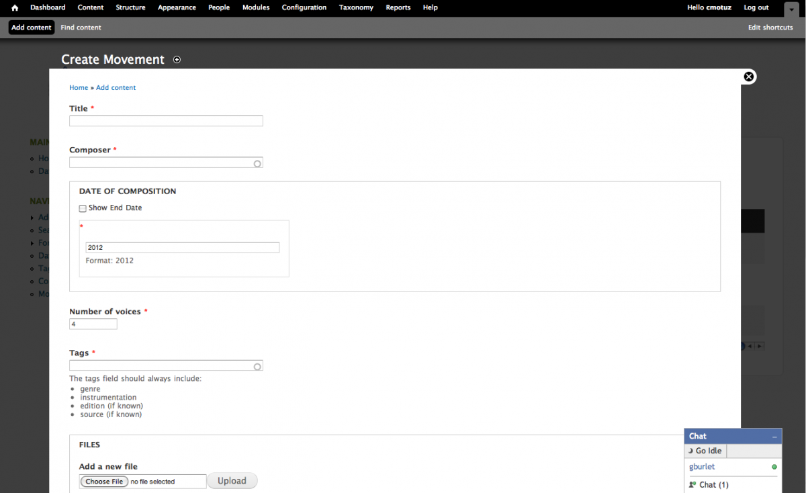

Putting Drupal to good use
Posted by cmotuz on March 12, 2012
The ELVIS project is in full swing, after a very short ramp up. Our team of Research Assistants has been collecting public domain music notation files and uploading them into what will be a vast database of music spanning from 1300-1900. McGill will focus on collecting early music, that is, up until 1700 or so, while researchers at other Universities will focus on later repertoire.
What allowed us to get going so quickly with making our data website is a content management platform called Drupal. In a world where hundreds of different versions of essentially the same software are written to give users this bell but not that whistle, or worse yet, where companies use software that come with all the bells and whistles possible, using only a small percentage of its capability while the massive program weighs down the whole operating system.
Needless to say Drupal is different. Drupal uses modules which can be mixed and matched to put together a content management system with everything one needs, and nothing that one does not. Obviously ELVIS needed first and foremost an online database, but as we try to systematize how we deal with different types of pieces, we needed a discussion forum too. Here’s where we talk about things like “What does the number of voices really mean? What do we do with duplicates? Is it worth our time to upload .pdfs so that we can compare duplicates easily? In case we want a quicker back and forth with someone online, we’ve added a chat module like that on Facebook. We also needed both input fields and a tagging system to reflect the fact that while some elements of music are universal (they all carry a date, so that can have a date input field), others aren’t (they don’t all have text, so there is no language field, just tags).
Because all of these modules are pre-existing and free, we could set up a custom site and get researchers using it within a week. Here’s what it looks like from the inside:  This isn’t the first time that this lab has built a site using Drupal. In fact, I’m on it now, using the blog module. In a field that thrives on innovation, packages like Drupal make it possible to get into the interesting research without having to start by reinventing the wheel.